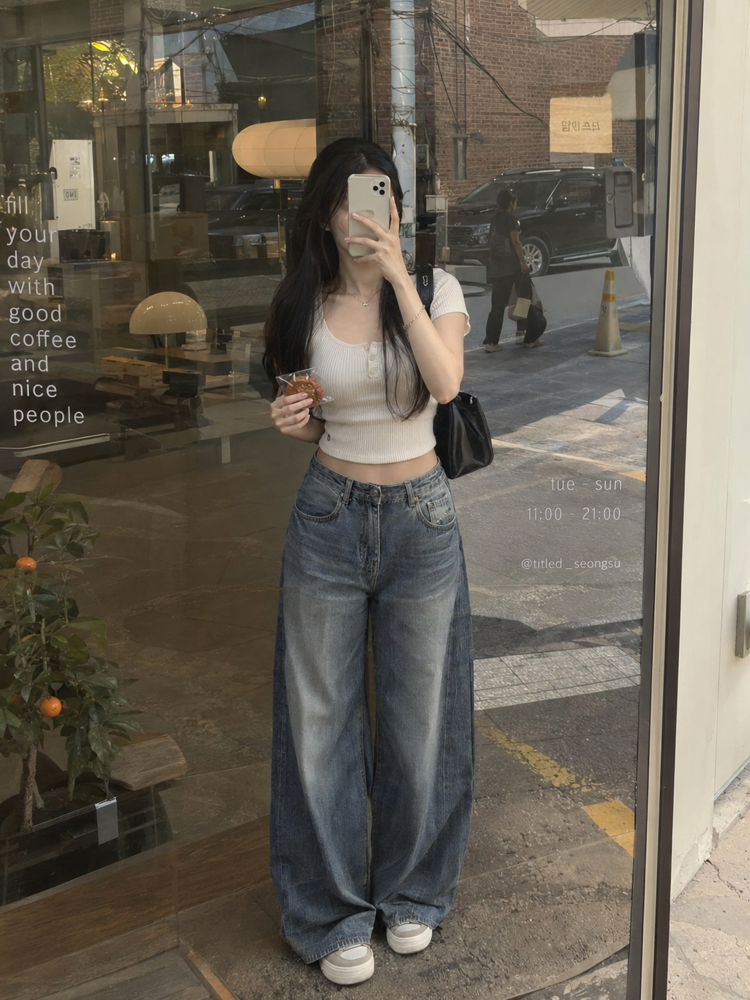
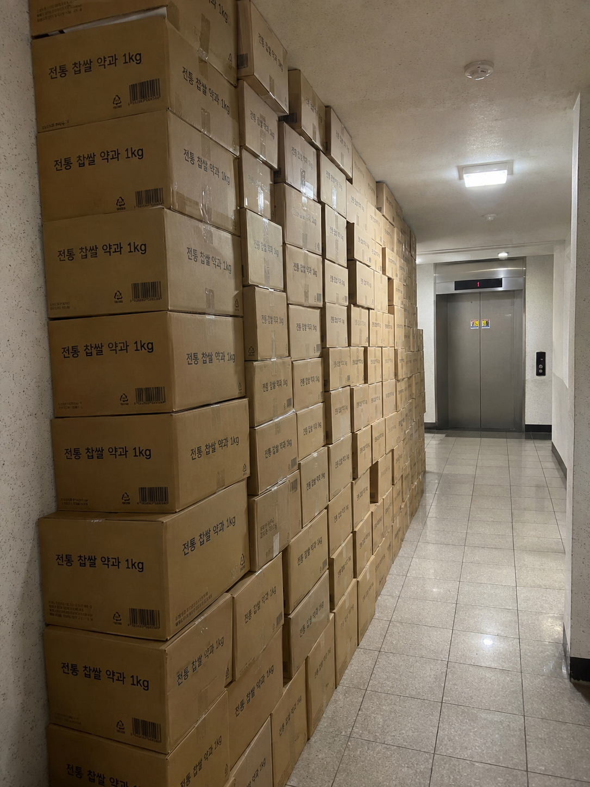

사용자 ChatGPT Pro 세션 직접 실시간 검증 완료
조회수 10만+ 터지는
과장 밈 + 일상 훔쳐보기 프롬프트
카카오톡 25개 대박 피드의 승리 공식을 완벽 역기획하여 개발된 2-Card 프롬프트 시스템입니다. 어떤 상품이든 대입만 하면 고효율 바이럴 피드가 완성됩니다.
실제 ChatGPT 생성 검증 결과
테스트 상품: [호정가 우리쌀약과 1kg] 68% 특가 (4,990원)
1
사진 1: 시선 후킹 일상 스냅
체류시간 극대화

클릭하여 고화질 원본 확대 보기
장소/구도: 성수동 카페 쇼윈도 유리창 반사 전신 거울 셀카
인물 연출: 20대 여성 트렌디 크롭탑 + 와이드 데님 사복 핏, 폰으로 얼굴 상단 가림
상품 노출: 한 손에 투명 포장된 약과를 무심하게 든 라이브 스냅
2
사진 2: 과장 밈 증명샷
바이럴 & 댓글 유도

클릭하여 고화질 원본 확대 보기
장소/구도: 아파트 엘리베이터 앞 복도 바닥 (사람 완전 배제)
과장 연출: '전통 찹쌀 약과 1kg' 갈색 택배 박스 수십 개가 천장까지 빈틈없이 적재
현실감: 복도 타일 바닥, 형광등 조명, 택배 박스 바코드 실사 디테일
카카오톡 25개 바이럴 레퍼런스 역기획
10만 조회수를 보장하는 핵심 문법과 절대 피해야 할 실패 요인
반드시 지켜야 할 성공 공식 (DO)
- • 사진 1: 20대 여성 일상 훔쳐보기 (쇼윈도 거울 셀카, 폰으로 얼굴 가림, 크롭탑/와이드 팬츠 핏)
- • 사진 2: 사람 완전 배제, 비현실적으로 쌓인 천장 높이 택배 박스 탑 밈
- • 본문 톤앤매너: 억울함/경악/자책 ("기사님 죄송합니다.. 1개 100원 꼴인데 어케 참아요")
- • 댓글 유도: "프로필 링크 번호 안내 + 품절되면 알려달라" 자연스러운 반응 유도
조회수 죽이는 실패 요인 (DON'T)
- • 가정집 연출 금지: 수면 파자마, 주방 앞치마, 촌스러운 싱크대 배경 (아줌마/영업 피드로 오인)
- • 사람 개입 금지 (사진 2): 사람이 박스를 들고 포즈를 취하면 밈 느낌이 사라지고 상업 광고로 전락
- • 설명충 카피 금지: "건강하고 맛있는 영양 간식입니다" 식의 상품 설명문 즉시 이탈
- • AI 티 금지: 번들거리는 CG 피부 질감, 인위적인 3D 렌더링 톤 배제
어떤 상품이든 적용 가능한 10대 상황 프롬프트
{상품명}과 {소용량 1개 형태}만 변경하여 ChatGPT에 그대로 입력하세요.
Threads 실전 발행 피드 카피 세트 (호정가 약과)
사진 2장과 함께 업로드하는 본문 및 댓글 조합입니다.
피드 본문 (Post 1/2)
사진 2장 첨부
택배 기사님 진심으로 죄송합니다...🚪📦 1kg에 4천원대라길래 눈 돌아서 쟁여뒀는데 퇴근하고 엘베 내리자마자 저희 집 앞 보고 기절할 뻔했어요ㅋㅋㅋ 한 개 100원 꼴인데 이걸 어떻게 참아요 진짜ㅠㅠ 찹쌀이라 쫀득달달해서 온 가족이 먹어도 반년은 거뜬할 듯.. 쟁여두실 분들은 지금 얼른 타세요!!
첫 댓글 (Post 2/2)
전환 유도
프로필 링크에 약과 4천원대 공구 좌표 260번에 남겨뒀어요! 수량 얼마 안 남아서 품절 뜨면 댓글로 알려주세요 바로 확인해볼게요🔥